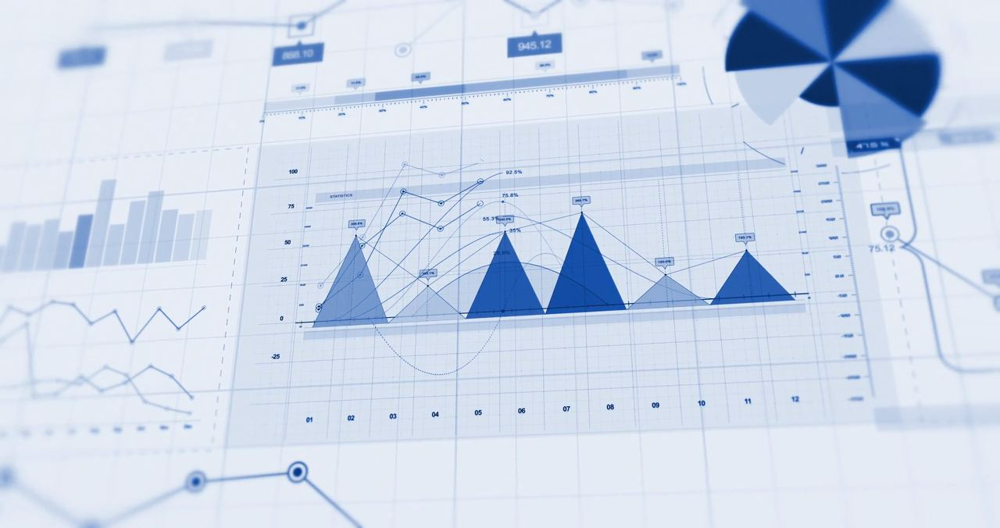

Individual
Personal investment accounts tailored to your goals, time horizon, and risk preferences. Suitable for most private investors seeking professional management or self directed access.
Marketswave is a global competitor in active fixed income with deep expertise across public and private markets. Our extensive resources, international reach and time tested investment process are designed to help give our clients an edge as they pursue their long term goals.
Clients with us rely on an investment process that has been test and trusted in various markets, honed over two decades, our process takes an integrated approach to employ our best ideas across public and private markets.
Our principles for responsible investment are based on the belief that companies who act responsibly and work in accordance with sustainable principles are better investment projects in the long term, as the risks and opportunities related to the environment, society and governance (ESG factors) are more extensively analyzed. Therefore, it is essential to integrate ESG related aspects when performing a company analysis.
We strive to always act responsibly and consider sustainable development in all our investment decisions and our daily operations. Responsibility is grounded in our employees' values. In our principles for responsible investment, sustainability risk assessments and business operations, we consider the most common international agreements and standards for leading society and business.
Understand your objectives, time horizon, and risk tolerance.
Build portfolios and structures aligned to those goals.
Track performance and rebalance as conditions change.
Communicate results and decisions with consistency.
Our Values
We operate as a cohesive unit, embracing diversity and collaboration, which fuels our shared commitment to achieving our mission and upholding our values.
We prioritize the needs and interests of investors in everything we do, aiming to empower them whether they engage with us directly or indirectly.
We embrace bold visions and actively pursue innovations that improve our services, benefit the communities we operate in, and make a positive impact on the wider world.
We encourage continuous personal and professional development, knowing that our collective growth drives the company's success.
Flexible structures designed for individuals, shared ownership, and business entities.
Personal investment accounts tailored to your goals, time horizon, and risk preferences. Suitable for most private investors seeking professional management or self directed access.
Shared ownership structures for couples or partners. Joint accounts provide coordinated management while maintaining clear ownership and beneficiary arrangements.
Corporate, partnership, and institutional accounts. Designed for businesses, family offices, and organizations requiring formal governance, reporting, and multi signatory controls.
Complete a brief questionnaire designed to understand your risk tolerance and investment objectives, so every recommendation ties back to your actual objectives.
Your portfolio is built around your goals, timeline, and risk tolerance leveraging institutional best practices.
Clear, upfront thresholds and costs, with no hidden fees buried in fine print.
Access a wider range of asset classes than most investors could reasonably assemble on their own.
Once your portfolio is funded, it is expected to be fully invested within a few weeks and start generating returns.
Portfolios feature investments from prominent global managers like Northbridge Capital Partners and Ashford & Vane, then managed by experienced portfolio managers.
From your dashboard, you can access real time visibility into your holdings, allocation, and returns, whenever you want it.
Your portfolio is expected to produce a single 1099-DIV tax form at the start of each year.
After your portfolio has been active for one year, you can elect to begin taking distributions or start to liquidate your account.

Through an investment approach entailing rigorous research and analysis across multiple sectors, we find those select GPs whose strategies, resources, and philosophies outperform the market and meet our clients' exacting needs.
Our reach, expertise, and depth of firm knowledge make us a genuine strategic partner for companies, founders, and stakeholders alike. We draw on relationships built across our investment and advisory practice to identify sourcing opportunities others simply don't see.
Distinctive deal sourcing on a global scale puts our pick of the private markets at your fingertips. Critical intelligence informs our differentiated investments. A streamlined structure and expert team seamlessly deliver purposeful service. All to build your clients' confidence, and your business.
Management teams value our ability to bring real depth and breadth of resources to the table. Our Value Accelerator is a centralized platform that partners directly with portfolio companies to build enduring businesses and create real, incremental value while supporting operational excellence and digital transformation across every stage of a company's growth.
From discretionary management to trading access, retirement planning, and specialized solutions, each designed around clear client outcomes.
Access to stocks, funds, crypto, commodities, currencies, and equities with professional infrastructure and execution support.
Learn moreA portfolio management style in which a professional manager exercises personal judgment to select and time investments for a client rather than adhering to fixed rules or passive benchmarks.
Learn moreStructured process of accumulating and allocating assets to produce reliable income after career ends. It integrates savings rates investment allocation tax strategies and longevity considerations.
Learn moreAccounts designed to pay substantially more interest than conventional savings while keeping cash accessible for emergencies and near term goals.
Learn moreCoordinated system of organizations processes and technologies that transform raw materials into finished goods and deliver them to end customers. Core priorities are efficiency resilience cost optimization and disruption mitigation.
Learn moreExpert advisory services that assist organizations in diagnosing issues designing solutions and implementing changes to enhance performance. Typical focus areas encompass strategy operations finance technology and organizational effectiveness.
Learn moreWe exist to protect and grow capital with care. Our role is not to impress with complexity, but to deliver thoughtful, durable outcomes for the people and institutions who entrust us with their wealth.
Start a ConversationPrivate Equity, Real Assets, Stocks & ETFs, and Crypto — built into one portfolio.
A dedicated Portfolio Manager reviews and approves every allocation before it moves.
Real-time dashboard access to your holdings, returns, and full transaction history.